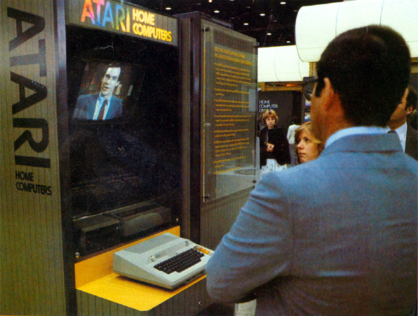
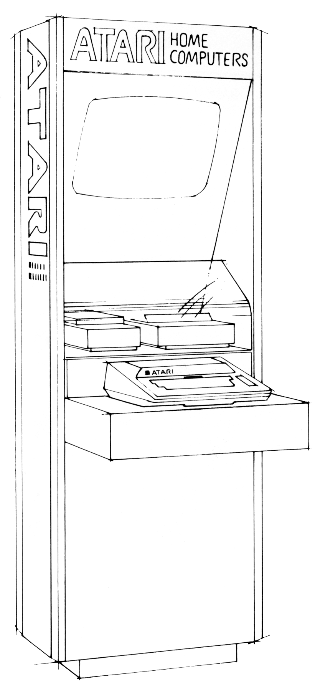

Say
hello to ERIC... our more to the point, ERIC will say hello to you.
Designed to be installed at Atari retailers, ERIC would greet
curious passerby's and invite them to learn all about the wonders of
Atari home computers and what they can do for them.

ERIC was a system of Atari computer components
installed into a retail kiosk. Called a POP (Point of
Purchase) dealer demonstration kiosk. When the user pressed keys on
the ERIC's Atari 800 computer (a fully working Atari 800, not a mock
up), it would signal through its connected Atari 850 interface (which you
can learn all about in the Peripherals link on the 400/800 Main Menu.) to a
specially designed, custom Serial to Laserdisc interface
designed by Atari's Grass Valley Think Tank. This
special interface then connected to a
Pioneer Laserdisc player to play a particular scene on the disc to
display information that the user would request, everything from
Finances to Communications. Programming to of course... video
games.
This was a very advanced and unique system
that Atari developed in-house to deploy out to its Retailers.
At the same time, arcades were
entering the new realm of super high graphic quality video game
entertainment with games such as the famous Dragon's Lair to Atari's
very own Firefox laserdisc game.
To use this kind of technology in retail was a
very innovative concept that Atari was implementing.
A
startup from Nolan Bushnell's "Catalyst Technologies,"
which was
startup think tank company that would provide office
space/staff and workspace to companies who had products
that were well ahead of their time. Products such
as Androbot Robots, Axlon - Memory, Petsters & more,
Etak Vehicle Navigation (long before GPS), Cumma
Technologies and another company, who's technology
was well ahead of its time. Headed by a Catalyst manager
named
Perry Odak and with an
upper manager from Atari named Gene Lipkin. after leaving Atari,
they would later found a
company called ByVideo that looked to install video shopping kiosks
into stores. The user could browse photo's and videos of products, make
selections, pay for them and have them shipped to the store for
pickup or shipped to their homes. Essentially a very
early 1980's version of Amazon. Florsheim shoes had many hundreds of
these ByVideo kiosks in their stores throughout the
United States.